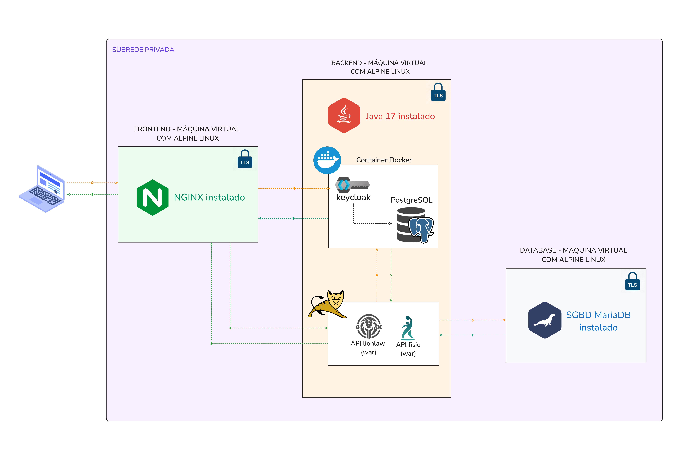

Configuração de Ambiente Distribuído com Alta Disponibilidade, Segurança e Autenticação Unificada¶
Esta documento explica nossos passos na aplicação do TLS, substituindo HTTP por HTTPS em todas as conexões entre as VMs Frontend, Backend e Database.
Diagrama de arquitetura do ambiente.¶

1 - Gerando certificados digitais auto-assinados¶
1.1 - Gerar a chave privada da CA¶
openssl genrsa -out llw-ca.key 4096
1.2 - Gerar o certificado da CA¶
openssl req -x509 -new -nodes -key llw-ca.key -sha256 -days 365 \
-out llw-ca.crt \
-subj "/C=BR/ST=Parana/L=Foz/O=LionLaw/CN=LLW-CA"
1.3 - Arquivo de configuração para SAN (Subject Alternative Names)¶
Vamos utilizar o conteudo desse arquivo llw-cert.cnf como base para criação de nosso certificado.
[req]
default_bits = 2048
prompt = no
default_md = sha256
req_extensions = req_ext
distinguished_name = dn
[dn]
C = BR
ST = Parana
L = Foz
O = LionLaw
CN = llw.local
[req_ext]
subjectAltName = @alt_names
[alt_names]
DNS.1 = frontend.llw
DNS.2 = backend.llw
DNS.3 = database.llw
Esse certificado será utilizado para todas as conexões do nosso projeto por isso terá varios "subject alternative names" (SAN).
1.4 - Gerar chave privada e CSR com SANs¶
openssl req -new -nodes -out llw.csr -newkey rsa:2048 -keyout llw.key -config llw-cert.cnf
1.5 - Gerar e assinar o certificado usando a CA¶
openssl x509 -req -in llw.csr -CA llw-ca.crt -CAkey llw-ca.key -CAcreateserial \
-out llw.crt -days 365 -sha256 -extfile llw-cert.cnf -extensions req_ext
2 - Configurando o NGINX para usar TLS¶
2.1 - Modificar o arquivo de configuração do nginx¶
Adicionaremos as seguintes configurações e modificaremos as já existentes no arquivo de configuração do nginx (/etc/nginx/http.d/default.conf).
server {
listen 443 ssl;
listen [::]:443 ssl;
http2 on;
ssl_certificate /etc/ssl/certs/llw.crt;
ssl_certificate_key /etc/ssl/private/llw.key;
# HSTS (ngx_http_headers_module is required) (63072000 seconds)
add_header Strict-Transport-Security "max-age=63072000" always;
}
# HSTS Redirect
server {
listen 80 default_server;
listen [::]:80 default_server;
return 301 https://$host$request_uri;
}
ssl_ecdh_curve X25519:prime256v1:secp384r1;
ssl_ciphers ECDHE-ECDSA-AES128-GCM-SHA256:ECDHE-RSA-AES128-GCM-SHA256:ECDHE-ECDSA-AES256-GCM-SHA384:ECDHE-RSA-AES256-GCM-SHA384:ECDHE-ECDSA-CHACHA20-POLY1305:ECDHE-RSA-CHACHA20-POLY1305:DHE-RSA-AES128-GCM-SHA2ssl_session_cache shared:MozSSL:10m;
ssl_dhparam "/etc/ssl/dhparam";
Configuração gerada pelo Mozilla SSL Configuration Generator para o nginx, configuração intermediaria e com HSTS.
2.2 - Baixar o DHParam¶
curl https://ssl-config.mozilla.org/ffdhe2048.txt > /etc/ssl/dhparam
Tambem utilizamos o sugerido pelo próprio site da Mozilla
2.3 - Copiar os certificados para os diretórios corretos¶
cp llw.crt /etc/ssl/certs/llw.crt
cp llw.key /etc/ssl/private/llw.key
Após esses passos (e reiniciando o nginx) já deve ser possivel acessar nosso front utilizando HTTPS ao inves de HTTP, será necessário uma confirmação para prosseguir, pois o navegador não confia em certificado auto-assinados de cara.
3 - Baixando e instalando o Tomcat¶
Parar podermos utilizar do tomcat teremos que baixar e fazer a instalação manualmente, devido a ausencia do serviço nos repósitorios oficiais da distro que estamos utilizando (Alpine Linux).
3.1 - Baixando o arquivo compactado¶
wget https://dlcdn.apache.org/tomcat/tomcat-10/v10.1.41/bin/apache-tomcat-10.1.41.tar.gz
Arquivo .tar.gz da versão 10.1.41 do tomcat, obtida do site oficial do Apache Tomcat.
3.2 - Extraindo o conteudo¶
tar -xvzf apache-tomcat-10.1.41.tar.gz
3.3 - Movendo para uma pasta aprópriada¶
mv apache-tomcat-10.1.41 /etc/tomcat
3.4 - Criando um script de serviço¶
nano /etc/init.d/tomcat
Como estamos instalando manualmente criamos um script OpenRC para trata-lo como um service.
Conteudo do script¶
#!/sbin/openrc-run
description="Apache Tomcat"
command="/etc/tomcat/bin/catalina.sh"
command_args="start"
command_background="yes"
depend() {
need net
use dns logger
after firewall
}
start() {
ebegin "Starting Tomcat"
${command} start
eend $?
}
stop() {
ebegin "Stopping Tomcat"
${command} stop
eend $?
}
restart() {
ebegin "Restarting Tomcat"
${command} stop
sleep 2
${command} start
eend $?
}
3.5 - Tornando o script executavel¶
chmod +x /etc/init.d/tomcat
3.6 - Iniciando o serviço¶
service tomcat start
3.7 - Fazendo-o iniciar ao ligar a VM¶
rc-update add tomcat default
Agora o tomcat já é um serviço reconhecido e ja vai iniciar ao ligar a VM, podemos acessar sua página inicial acessando em um navegador a porta 8080 padrão que o tomcat sobe seu serviço, porem só é possivel acessar essa página localmente. Mas é possivel fazer um port-forwarding no virtual-box para acessarmos do host.
4 - Configurando o Tomcat para usar TLS¶
4.1 - Modificando arquivo de configuração do Tomcat (/etc/tomcat/bin/server.xml)¶
<Connector
port="443"
SSLEnabled="true">
<SSLHostConfig
ciphers="TLS_AES_128_GCM_SHA256:TLS_AES_256_GCM_SHA384:TLS_CHACHA20_POLY1305_SHA256:ECDHE-ECDSA-AES128-GCM-SHA256:ECDHE-RSA-AES128-GCM-SHA256:ECDHE-ECDSA-AES256-GCM-SHA384:ECDHE-RSA-AES256-GCM-SHA384:ECDHE-ECDSA-CHACHA20-POLY1305:ECDHE-RSA-CHACHA20-POLY1305:DHE-RSA-AES128-GCM-SHA256:DHE-RSA-AES256-GCM-SHA384:DHE-RSA-CHACHA20-POLY1305"
disableSessionTickets="true"
honorCipherOrder="false"
protocols="TLSv1.2,TLSv1.3">
<Certificate
certificateFile="/etc/ssl/certs/llw.crt"
certificateKeyFile="/etc/ssl/private/llw.key" />
</SSLHostConfig>
<UpgradeProtocol className="org.apache.coyote.http2.Http2Protocol" />
</Connector>
4.3 - Movendo os certificados para as pastas certas¶
cp llw.crt /etc/ssl/certs/llw.crt
cp llw.key /etc/ssl/private/llw.key
Utilizamos os certificados utilizados pelo nginx que também serão válidos para o tomcat apresentar pois possui varios SAN. Por padrão o nginx confia em certificados auto-assinados, por isso não teremos que modificar nada para isso ocorrer. E agora o sistema já está preparado para o deploy do war.
5 - Gerando arquivo war e deploy da API¶
Até agora utilizamos um arquivo JAR (standalone), ele já incluia todas as dependências necessárias para a execução da aplicação, incluindo um servidor Tomcat embutido. Isso facilita-va o processo de deploy, pois não dependia de um servidor de aplicação externo mas agora como lidamos com TLS usamos o tomcat por fora, e para gerarmos nosso war precisaremos modificar algumas configurações em nossa aplicação Spring, começando pelo pom.xml:
5.1 - Empacotamento¶
<packaging>war</packaging>
Mudaremos o modo de empacotamento que por padrão do maven é JAR
5.2 - Dependência¶
<dependency>
<groupId>org.springframework.boot</groupId>
<artifactId>spring-boot-starter-tomcat</artifactId>
<scope>provided</scope>
</dependency>
Ja tinhamos a dependencia mas o diferencial é que agora o tomcat é provido por fora por isso a linha provided.
5.3 - Plugin¶
<plugin>
<groupId>org.apache.maven.plugins</groupId>
<artifactId>maven-war-plugin</artifactId>
</plugin>
Substituiremos o antigo spring-boot-maven-plugin pelo maven-war-plugin.
5.4 - Servlet Initializer¶
package com.Advocacia;
import org.springframework.boot.builder.SpringApplicationBuilder;
import org.springframework.boot.web.servlet.support.SpringBootServletInitializer;
public class ServletInitializer extends SpringBootServletInitializer {
@Override
protected SpringApplicationBuilder configure(SpringApplicationBuilder application) {
return application.sources(AdvocaciaApplication.class);
}
}
Criaremos essa classe que servirá a mesma função da classe main.
5.5 - Buildando o projeto¶
clean package
Após o build estar completo teremos nosso war que ja poderemos levar ao Tomcat.
5.6 - Deploy do war no Tomcat¶
Após transferir o war a VM podemos leva-lo a pasta webapps dentro dos arquivos do Tomcat.
mv Advocacia.war /etc/tomcat/webapps/backend.war
Por padrão o Tomcat (inicializado) ja roda automatico um war quando detecta alguma mudança ou novo arquivo;
5.7 - Adaptando proxy reverso (nginx)¶
Após o deploy temos nossa api rodando em https://backend.llw/backend, note que a primeira diretiva é o caminho com nome do war então para acessarmos a api de fato temos que acessar pelo nome do war, por isso teremos que adaptar o proxy reverso no nosso front, para adicionar uma diretiva extra ao redirecionar o acesso, de /api/requisição para /backend/api/requisição.
location /api/ {
proxy_pass https://backend.llw/backend/api/;
proxy_http_version 1.1;
proxy_set_header Host $host;
proxy_set_header X-Real-IP $remote_addr;
proxy_set_header X-Forwarded-For $proxy_add_x_forwarded_for;
proxy_set_header X-Forwarded-Proto $scheme;
proxy_pass_request_headers on;
proxy_pass_request_body on;
}
Tambem modificamos a requisição de HTTP para HTTPS, não sendo necessario explicitar a porta 443 pois já é a padrão do protocolo.
5.8 - Moficando o front-end¶
Tambem será necessario mudar no front o caminho que a requisição é feita.
export const environment = {
SERVIDOR: "https://frontend.llw"
};
Após isso buildamos o front e fazemos deploy dele novamente, e agora já será possivel fazer requisições ao back utilizando HTTPS tambem.
6 - Configurando o mariadb para usar TLS¶
6.1 - Modificando o arquivo de configuração do mariadb (/etc/my.cnf.d/mariadb-server.cnf)¶
require_secure_transport = on
ssl-cert = /etc/ssl/certs/llw.crt
ssl-key = /etc/ssl/private/llw.key
ssl-ca = /etc/ssl/certs/llw-ca.crt
tls_version = TLSv1.2,TLSv1.3
ssl-cipher = ECDHE-ECDSA-AES128-GCM-SHA256:ECDHE-RSA-AES128-GCM-SHA256:ECDHE-ECDSA-AES256-GCM-SHA384:ECDHE-RSA-AES256-GCM-SHA384:ECDHE-ECDSA-CHACHA20-POLY1305:ECDHE-RSA-CHACHA20-POLY1305:DHE-RSA-AES128-GCM-SHA256:DHE-RSA-AES256-GCM-SHA384:DHE-RSA-CHACHA20-POLY1305
6.2 - Movendo os certificados para as pastas certas¶
cp llw.crt /etc/ssl/certs/llw.crt
cp llw.key /etc/ssl/private/llw.key
cp llw-ca.crt /etc/ssl/certs/llw.crt
6.3 - Modificando a conexão com o BD do back¶
Teremos que modificar o jeito que o back faz conexão com o banco, como não é http não é tao simples como mudar pra https, então devemos adicionar alguns extras no url.
spring.datasource.url=jdbc:mysql://database.llw:3306/adv?useSSL=true&requireSSL=true&verifyServerCertificate=true
6.4 - Adicionando o crt no truststore do java¶
Para que o spring confie no certificado que o banco apresenta ele terá que estar presente no arquivo truststore do java que estamos utilizando.
keytool -importcert -alias llw -file llw.crt -keystore /usr/lib/jvm/java-17-openjdk/lib/security/cacerts -storepass changeit
keytool -importcert -alias llw -file llw-ca.crt -keystore /usr/lib/jvm/java-17-openjdk/lib/security/cacerts -storepass changeit
Ele perguntará se deseja mesmo confiar nesse certificado, responderemos "yes", e ele confirmará com "Certificate was added to keystore"